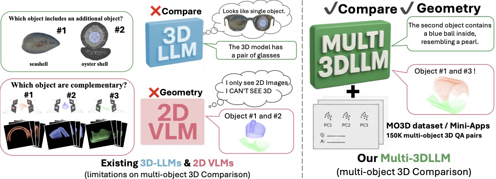
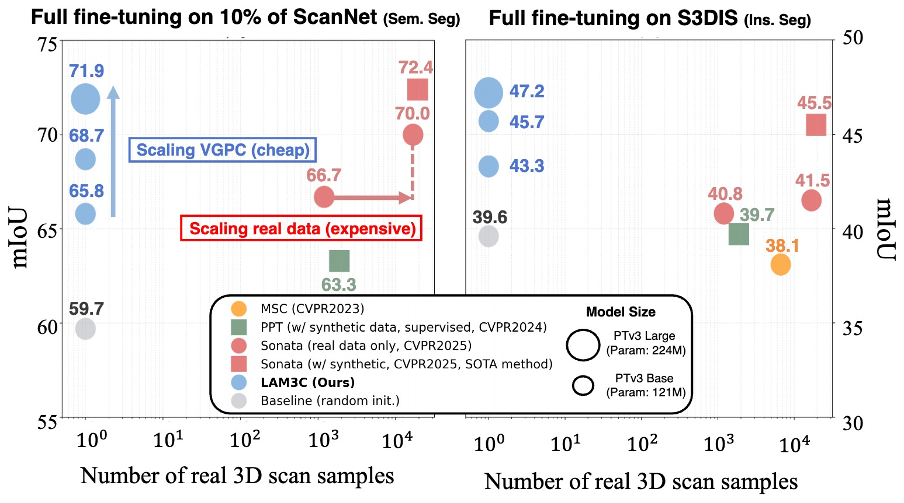
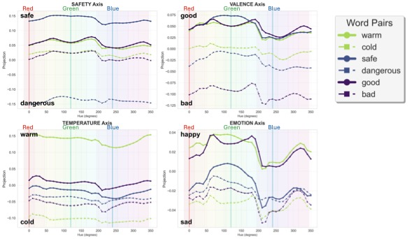
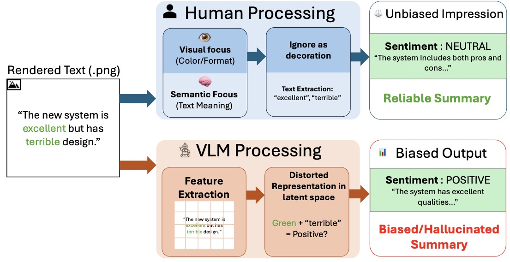

Research
I'm interested in computer vision, 3D understanding, and vision-language models. My research focuses on learning 3D representations and understanding spatial relationships using large language models. Some papers are highlighted.
|
|

|
Beyond Single Object: Learning 3D Relations with Large Language Models
Kohsuke Ide,
Ryousuke Yamada,
Yue Qiu,
Xianzheng Ma,
Yoshihiro Fukuhara,
Hirokatsu Kataoka,
Yutaka Satoh
CVPR Findings, 2026
Investigating how large language models can learn and reason about 3D spatial relationships between multiple objects.
|
|

|
3D sans 3D Scans: Scalable Pre-training from Video-Generated Point Clouds
Ryousuke Yamada,
Kohsuke Ide,
Yoshihiro Fukuhara,
Hirokatsu Kataoka,
Gilles Puy,
Andrei Bursuc,
Yuki M. Asano
CVPR, 2026
project page
/
arXiv
Scalable 3D pre-training approach that generates point clouds from videos, eliminating the need for expensive 3D scans.
|
|

|
Colors You Can't See, Semantic Biases You Can't Ignore
Kohsuke Ide,
Ryousuke Yamada,
Yoshihiro Fukuhara,
Hirokatsu Kataoka,
Yutaka Satoh
ICCV Workshop on MMRAgI, 2025
Analyzing semantic biases in vision-language models related to color perception and understanding.
|
|

|
Seeing Red, Thinking Bad: Color Bias in Vision Language Models
Kohsuke Ide,
Ryousuke Yamada,
Yoshihiro Fukuhara,
Hirokatsu Kataoka,
Yutaka Satoh
ICPR, 2026
Investigating how color biases in vision language models affect their reasoning and decision-making.
|
|
National Institute of Advanced Industrial Science and Technology (AIST)
Researcher, Jan 2024 - Present
Computer vision and pattern analysis research, focusing on VLMs and 3D representation.
Preferred Networks (PFN)
Researcher, Aug 2024 - Mar 2025
3D reconstruction and free-viewpoint video technologies.
LightBlue Technology
ML Engineer, Sep 2021 - Mar 2024
Developed light-weight object tracking algorithms for edge devices.
M3
MLOps Engineer, Sep 2023 - Oct 2023
Developed open-source solution for automatic Kubernetes OOM recovery.
|
|
{kind=link}